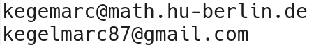

Welcome to my webpage. I am a postdoc in the working group of Prof. Chris Wendl at the Humboldt University Berlin. Sevilla
From September 2014 till July 2018 I was a member of the working group of Prof. Hansjörg Geiges at the University of Cologne where I graduated in January 2017 about "Legendrian knots in surgery diagrams and the knot complement problem".
The fields of my research include low-dimensional topology, contact geometry, symplectic topology and their interactions.
Mailing address:
Institut für Mathematik
Humboldt-Universität zu Berlin
Unter den Linden 6
10099 Berlin
Germany
Office:
Rudower Chaussee 25 (Johann von Neumann-Haus)
12489 Berlin
Room : 318, Haus 1
Telephon : +49-30-2093-45426
E-Mails :

Office Hours: after the lectures
Lunch: daily at 11:30
Geometric topology: low dimensional topology, experimental mathematics, knot theory, 3-manifolds, smooth 4-manifolds, Dehn surgery, open books, Kirby calculus, Lefschetz fibrations, trisections and Heegaard splittings.
Differential topology: contact and symplectic geometry, Legendrian and transverse knot theory, Engel structures, Morse theory, hyperbolic geometry.
Lecture Topologie I (4 hours lecture + 2 hours exercise session)
Chun-Sheng Hsueh, Ph.D. student funded by the Claussen-Simon Stiftung.
Supervised master and bachelor students
Working group seminar on symplectic geometry
Berlin-Hamburg Seminar zur symplektischen Geometrie
Oberseminar Differentialgeometrie und Geometrische Analysis
Berlin-Brandenburg Workshop V: Knot Theory and its Application, Monday 28. April 2025.
Berlin-Brandenburg Workshop IV: Knot Theory and its Application, Monday 9. December 2024.
Workshop on 4-manifolds and algorithms, University Regensburg, 9. Sep - 13. Sep 2024.
Berlin-Brandenburg Workshop III: Knot Theory and its Application, Friday, 17 May 2024.
Berlin-Brandenburg Workshop II: Knot Theory and its Application, Friday, 17 November 2023.
Berlin-Brandenburg Workshop I: Knot Theory and its Application, Friday, 14 July 2023.
DMV-Jahrestagung 2022, Section S06: Topology and Geometry, Freie Universität Berlin, September 2022.
Reading seminar: Freedman's proof of the 4-dimensional Poincaré conjecture, WS 2021/22
Learning Seminar: Computational Topology, WS 2017/18, University of Cologne
The stabilisation height of fibre surfaces, Lecture series by Filip Misev, 19 Oct - 20 Oct 2017, University of Cologne
Morse Structures on Open Books, Lecture series by Joan Licata, 17 May - 19 May 2017, University of Cologne
A video illustrating that Haken's knot is isotopic to the unknot. This was created for a lecture on Differential Topology.
Knoty a program to generate interactive 3D animations of Legedrian knots and contact structures. This program was written by Stanislaus Stein during a lecture on Contact Geometry.
Lecture notes for the lecture 4-Manifolds and Kirby calculus.
Lecture notes for the lecture Topology of 3-manifolds.
Carolin Wengler's notes for the lecture Topologie I.
Connect Four on the Klein bottle (Vier gewinnt auf der Kleinschen Flasche)
You can also find me on: ORCiD